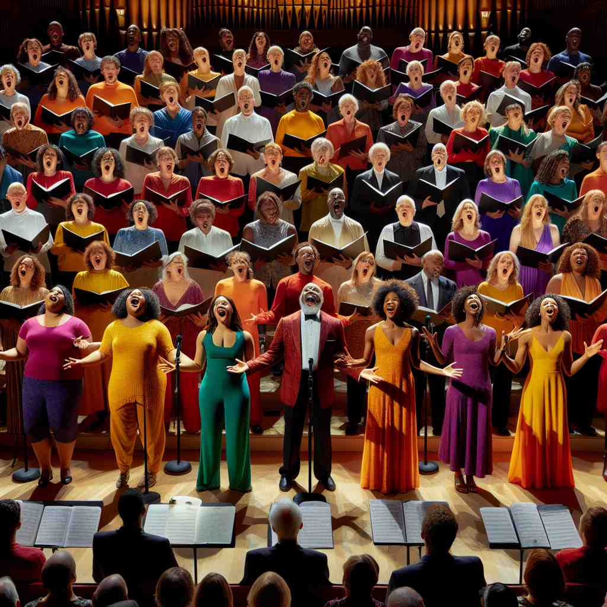

💬 The children love to join the chorus during the school concert.
💬 The singers love to sing in a chorus during their performances.
💬 They love to sing in chorus during the concert.

💬 They love to sing in a chorus during the concert.
🔈 ['kɔːrəs]
🗝️ n. a group of people singing together
🖼️ 在一个古老的教堂里，阳光透过彩色玻璃窗洒在唱诗班身上。他们排成一列，齐声唱着和谐的旋律，声音悠扬，令人心旷神怡。这就是'chorus'作为一个合唱团体在一起歌唱的场景。
🔍 想象一个合唱团（chorus）在舞台上演唱。这个核心图像可以帮助你联想到歌曲中反复出现的部分（像是合唱团反复演唱的段落），多人同时表达观点（如同合唱团齐声歌唱），以及古希腊戏剧中评论剧情的群体（最早的合唱团用途之一）。通过这个统一的意象，你可以更容易理解和记忆'chorus'的各种含义。
💬 The children love to join the chorus during the school concert.
💬 The singers love to sing in a chorus during their performances.
💬 They love to sing in chorus during the concert.
💬 They love to sing in a chorus during the concert.
🌳 来自希腊词根 "choros"，意为 "合唱"。该词指的是歌曲中重复的一部分或合唱团。
💡 可以联想为 "core group singing"（核心的合唱组），将 "chorus" 暗示为音乐作品中的核心部分或合唱团的核心意义。
🗝️ n. a part of a song that is repeated after each verse
🖼️ 在一场热闹的音乐会上，乐队正在演奏一首流行歌曲。每当主唱唱完一段歌词，观众就会跟着音乐一起高声唱出副歌部分，声音一致，充满激情。这展示了'chorus'作为歌曲中反复出现的部分。
💬 Everyone joined in singing the chorus of the popular song.
❓ 类比合唱团齐声演唱的部分
🗝️ n. something said or expressed by many people together
🖼️ 在一次重要的演讲结束时，听众纷纷站起来，齐声鼓掌，并喊出'感谢您'。每个人的声音汇聚在一起，形成了一个强有力的声势，表现了'chorus'作为众人一同表达某事的含义。
💬 There was a chorus of complaints about the new policy.
❓ 比喻多人同时表达相同的想法，如同合唱
🗝️ v. to say or shout something all together
🖼️ 在一场激烈的比赛中，观众全体站起来高喊支持他们的球队。成千上万的人一起呐喊，声音震耳欲聋，展现了'chorus'作为一起大声喊话的意义。
💬 The children chorused 'Good morning' to their teacher.
❓ 动词化，表示像合唱团一样一起说话或喊叫
🗝️ n. a group of performers in a Greek play who comment on the action
🖼️ 在一场古希腊戏剧表演中，舞台边缘有一组演员，他们不参与主要剧情，但通过歌唱和朗诵来进行评价和说明，提供背景和洞察。这展示了'chorus'作为希腊戏剧中评论行动的表演者群体。
💬 In ancient Greek theater, the chorus often represented the voice of the community.
❓ 源自古希腊戏剧中的合唱团，对剧情进行评论